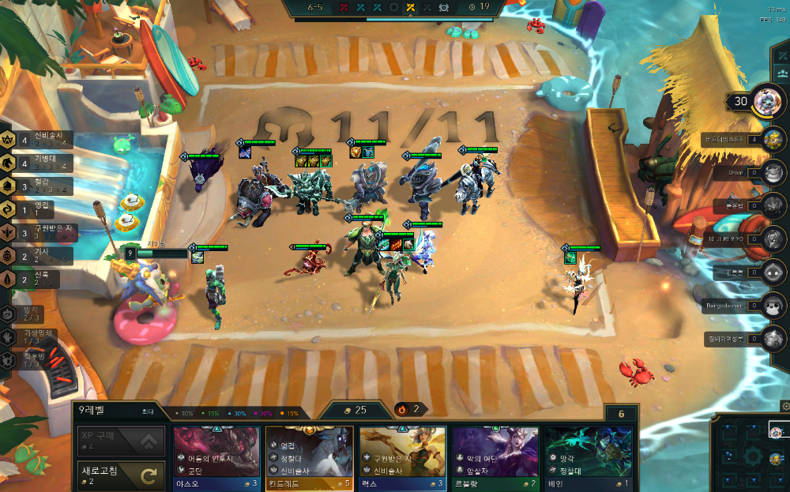
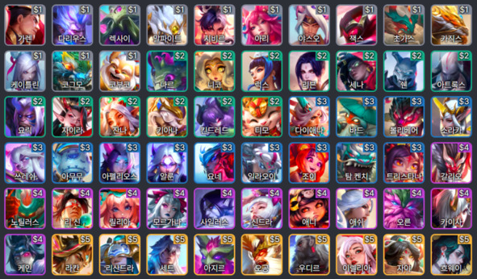
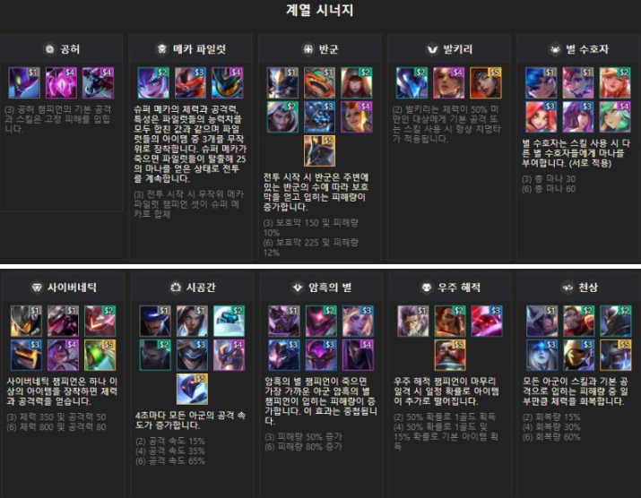

롤토체스란?

전략적 팀 전투는 팀 구성 실력을 시험하는 라운드 기반 전략 게임입니다. 8인 난투전에서 팀을 선택하고 배치하며 뛰어난 전략을 펼치고 승리를 향해 나아가세요. 수백 가지의 팀 조합과 끊임없이 진화하는 메타 속에서 정해진 전략은 없습니다. 하지만 승자는 단 한 명뿐이죠. 친선 및 경쟁 모드를 넘나들며 적을 물리치고 끝까지 살아남아 최후의 승자가 되세요!
진행방식 - 기물소개

- 기물, 유닛: 챔피언
- 회전초밥, 초밥집: 공동 선택 단계. 기물이 돌아가는 모습이 회전초밥과 닮았다고 붙었다.
- X성: 챔피언 등급을 일컫는다. 기본 등급은 1성, 1성 기물을 3개 모으면 2성, 2성 기물을 3개 모으면 3성이 되어 챔피언이 더욱 강해진다.
- X코(스트): 챔피언의 가격을 일컫는다. 챔피언의 단계와 대응된다.
진행방식 - 시너지&벨류&덱

- 시너지: 기물이 가진 계열/직업을 일컫는다.
- 덱: 조합. 덱 이름은 메인 시너지나 캐리 역할을 맡는 챔피언의 이름을 따는 것이 일반적이다.
- 리롤덱: 레벨업을 미루고 새로고침을 계속하여 기물을 최대한 많이 모으는 덱. 리롤이 잘 되어 3성 기물을 많이 만들면 황금 OO덱이라 불린다.
- 고밸류덱: 빠르게 레벨업 하여 4~5코스트의 고성능 기물들로 구성하는 덱.